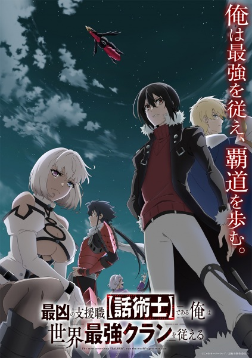

The Most Notorious "Talker" Runs the World's Greatest Clan

×

You can Watch The Most Notorious "Talker" Runs the World's Greatest Clan on our official website.
Your trusted source for The Most Notorious "Talker" Runs the World's Greatest Clan full episode and all anime series.
You can Watch The Most Notorious "Talker" Runs the World's Greatest Clan on our official website.
Noel longs to be a Seeker like his heroic grandfather, slaying the beasts that emerge from Abysses and exploring far-off lands. Unfortunately, it turns out he's nothing but a measly Talker–a job with no combat skills whatsoever. Undaunted, Noel sets out to establish the strongest clan in all the land, using his silver-tongued Talker skills to unite assassins and heroes under his leadership.
(Source: Seven Seas Entertainment)
Japanese: 最凶の支援職【話術士】である俺は世界最強クランを従える
English: The Most Notorious "Talker" Runs the World's Greatest Clan